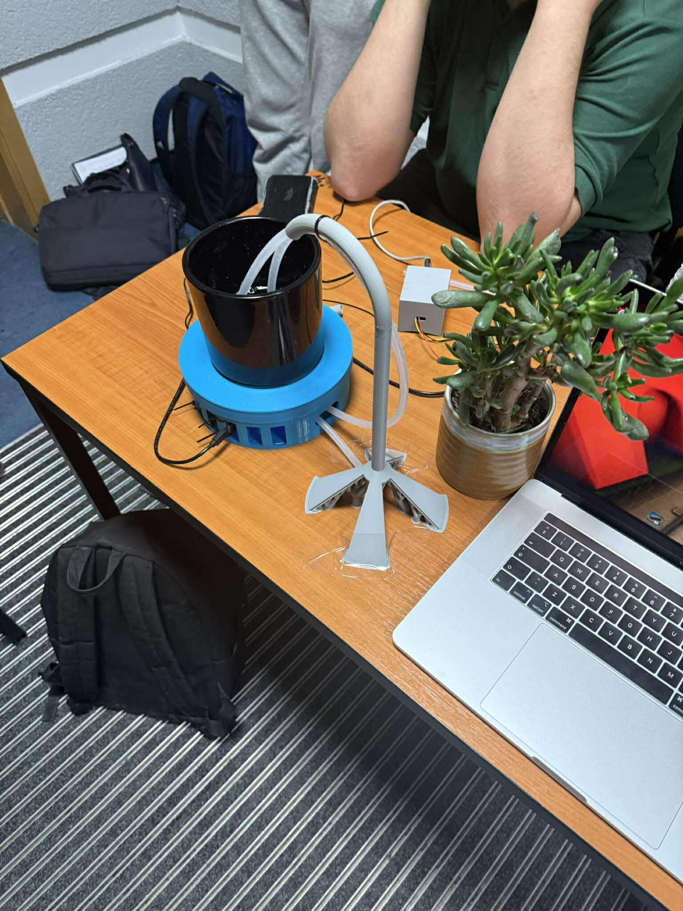
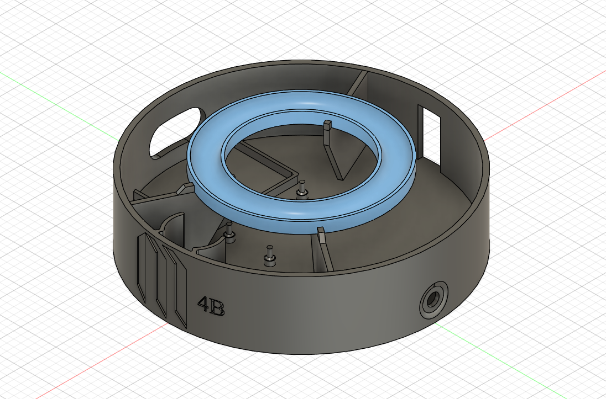

Interdyscyplinarny projekt zespołowy zrealizowany w ramach akademickiego programu Project-Based Learning (PBL): bezglebowa doniczka z zamkniętą, autonomiczną pętlą pomiarowo-wykonawczą. Roślina jest nawadniana, monitorowana i — co nietypowe — powoli obracana wokół własnej osi, dzięki czemu rośnie prosto, bez wyginania pędów do światła.


Zaprojektowany od podstaw mechanizm obrotu doniczki oparty na mechanicznym łożyskowaniu kulkowym. Silnik krokowy (przez sterownik A4988, praca w mikrokrokach) napędza platformę bardzo powoli — na tyle, by roślina otrzymywała równomierną ekspozycję na światło z każdej strony. Efekt: eliminacja zjawiska fototropizmu, czyli wyginania pędów w kierunku źródła światła. Łożysko kulkowe przenosi ciężar doniczki z wodą, więc silnik pokonuje wyłącznie opory toczenia, a nie masę układu.
Kluczowy problem: obrót silnika krokowego to sekwencja tysięcy impulsów STEP z odstępami
rzędu milisekund. Wykonana blokująco, zamroziłaby odczyty z czujników na długie sekundy.
Rozwiązanie — trzy niezależne zadania uasyncio współdzielące pętlę zdarzeń:
# main.py — szkielet pętli pomiarowo-wykonawczej (ESP32, MicroPython) import uasyncio as asyncio async def task_sensors(state): while True: state.soil = soil_adc.read() # czujnik pojemnościowy state.temp, state.rh = dht22.measure()# DHT22 / AM2302 await asyncio.sleep(5) async def task_pump(state): while True: if state.soil < STIR_THRESHOLD: pump.on() # klucz tranzystorowy await asyncio.sleep(DOSE_S) pump.off() await asyncio.sleep(30) async def task_rotate(): while True: # A4988: STEP co kilka ms step_pin.on(); await asyncio.sleep_ms(2) step_pin.off(); await asyncio.sleep_ms(ROT_PERIOD_MS) asyncio.run(asyncio.gather(task_sensors(state), task_pump(state), task_rotate()))
await oddaje sterowanie pętli zdarzeń; silnik kroczy „w tle" względem pomiarów.